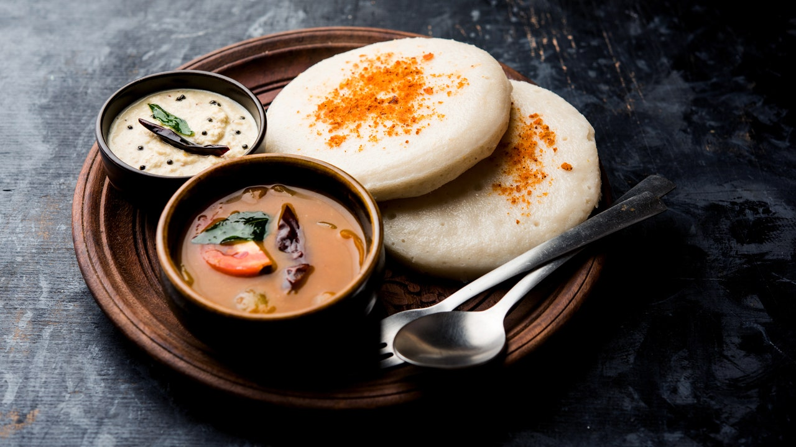

Here's a step-by-step guide to making Idli, Sambhar, and Coconut Chutney:
Idli
Ingredients:
2 cups idli rice
1 cup urad dal (split black gram)
1 tsp fenugreek seeds
Salt to taste
Water as needed
Instructions:
Soaking: Wash the idli rice and urad dal separately. Soak the rice and fenugreek seeds together in water for about 6 hours. Soak the urad dal separately for the same amount of time.
Grinding: Drain the water from the rice and grind it into a fine batter. Drain the urad dal and grind it separately into a smooth and fluffy batter. Mix both batters together in a large bowl.
Fermentation: Add salt and mix well. Cover the bowl and let it ferment in a warm place for 8-12 hours or overnight.
Steaming: Once the batter is fermented, pour it into greased idli molds. Steam in an idli steamer or pressure cooker without the whistle for about 10-12 minutes. Check if done by inserting a toothpick; it should come out clean.
Serving: Remove the idlis from the molds and serve hot.
Sambhar
Ingredients:
1 cup toor dal (split pigeon peas)
1/2 tsp turmeric powder
1 tbsp tamarind paste
1 cup mixed vegetables (carrot, potato, drumstick, etc.)
2 tbsp sambhar powder
Salt to taste
2 tbsp oil
1 tsp mustard seeds
1/2 tsp fenugreek seeds
A pinch of asafoetida (hing)
10-12 curry leaves
2 dried red chilies
1 onion, chopped
1 tomato, chopped
Fresh coriander leaves for garnish
Instructions:
Cooking Dal: Wash and cook the toor dal with turmeric powder in a pressure cooker until soft. Mash the cooked dal and set aside.
Cooking Vegetables: In a pot, cook the mixed vegetables with enough water until tender. Add tamarind paste and let it simmer.
Making Sambhar: Add the cooked and mashed dal to the vegetables. Stir in the sambhar powder and salt. Let it simmer for 10-15 minutes.
Tempering: Heat oil in a small pan. Add mustard seeds and let them crackle. Add fenugreek seeds, asafoetida, curry leaves, dried red chilies, chopped onion, and tomato. Sauté until onions turn golden brown.
Final Touch: Add the tempering to the sambhar and mix well. Garnish with fresh coriander leaves.
Coconut Chutney
Ingredients:
1 cup grated fresh coconut
2 tbsp roasted chana dal (Bengal gram)
1-2 green chilies
1/2 inch ginger piece
Salt to taste
Water as needed
1 tsp oil
1/2 tsp mustard seeds
1 dried red chili
8-10 curry leaves
A pinch of asafoetida (hing)
Instructions:
Grinding: In a blender, grind the grated coconut, roasted chana dal, green chilies, ginger, and salt with enough water to make a smooth paste. Transfer to a bowl.
Tempering: Heat oil in a small pan. Add mustard seeds and let them crackle. Add dried red chili, curry leaves, and asafoetida. Sauté for a few seconds.
Final Touch: Pour the tempering over the ground coconut mixture and mix well.
Enjoy your homemade Idli, Sambhar, and Coconut Chutney!